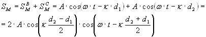

3. Оптика
1. Интерференция световых волн1.1. Интерференция от двух источников
1.2. Определим положение m-ого интерференционного максимума. Определим ширину интерференционного максимума
1.3. Интерференция на тонкой плёнке
1.4. Интерференция на клине (полосы равной толщины)
1.5. Кольца Ньютона
2. Дифракция волн
2.1. Дифракция Фраунгофера на узкой длинной щели в непрозрачном экране
2.2. Дифракция света на одномерной дифракционной решётке
2.3. Разрешающая способность дифракционной решётки
2.4. Дифракция рентгеновских лучей
3. Поляризация света
3.1. Поляризованный и естественный свет
3.2. Закон Малюса
3.3.Поляризация при отражении от диэлектриков. Закон Брюстера
3.4. Двойное лучепреломления
3.5. Искусственная оптическая анизотропия
3.6. Вращение плоскости поляризации
3. Оптика
1. Интерференция световых волн
Интерференцией волн называется явление усиления колебаний в одних и ослабление колебаний в других точках пространства в результате наложения двух или нескольких волн, приходящих в эти точки пространства.
Для наблюдения устойчивой во времени интерференционной картины необходимы условия, при которых частоты, поляризация и разность фаз интерферирующих волн, были бы постоянными в течение всего времени наблюдения.
Интерферируют когерентные, монохроматические волны.
Когерентные волны - волны одинаковой частоты, колебания в которых отличаются постоянной разностью фаз, не изменяющейся со временем.
1.1. Интерференция от двух источников
Свет от одного источника с помощью непрозрачного экрана с двумя отверстиями даёт возможность получить два когерентных источника волн (схема Юнга). Расстояние между источниками (В, С) равно l. Длина волны, излучаемая источниками λ, расстояние до экрана, где наблюдается интерференция. О – центр экрана.
Пусть в точке М – экрана происходит наложение когерентных волн. Получим условие усиления и ослабления волнами друг друга. Расстояние от В источника до точки М – d1, от С до точки М – d2. Колебания точки М, вызываемые первым. источником волн: , а колебания, вызываемые 2-ым источником: , где А – амплитуда колебаний источников, ω – частота колебаний, k=2π/λ – βолновое число.
Результирующее колебание точки М:
.
Амплитуда колебаний точки М:
AM=2Acos(k(d2-d1)/2) зависит от положения точки на экране и может быть равной 2А, если волны усиливают друг друга или нулю, если волны ослабляют друг друга.
Получим условие усиления или максимум интерференции. Чтобы АМ=2А, необходимо чтобы
|cos(k(d2-d1)/2)|=1
Это выполняется, если
; .
Значит d2-d1=±mλ.
Пусть d2-d1=Δd – разность хода интерферирующих лучей, а ΔФ=2π(d2-d1)/λ=2πΔd/λ – разность фаз интерферирующих волн, тогда
ΔΤ=2π/λ (d2-d1) =2π/λ Δd – ρоотношение между разность фаз и разность хода волн.
Если d2-d1=Δd=± mλ, γде m=0,1…, то АМ=2А и, следовательно, в этих точках пространства (экрана) наблюдается максимум интерференции. Разность фаз волн при этом будет равна ΔФ=±2πmλ/λ=±2πm.
Условие ослабления или минимум интерференции
Ам=0,
|cos(k(d2-d1)/2)|=0.
Это выполняется, если (k(d2-d1)/2)=±(2m+1)λ/2; следовательно
Δd=±(2m+1)λ/2.
Волны ослабляют друг друга, если разность хода при этом
ΔΤ=±2πmλ /(2λ)(2m+1)=±(2m+1)π,
m – называется порядком интерференционного максимума или минимума. В центре экрана наблюдается максимум нулевого порядка: d2-d1=Δd=0.
1.2. Определим положение m-ого интерференционного максимума. Определим ширину интерференционного максимума
Рисунок 1. В точке М наблюдается максимум m-ого порядка. Обозначим расстояние от центра экрана до точки М – ym. Воспользуемся геометрией рисунка 1. Отрезок CD=d2-d1. Треугольники BCD и AMO – подобны. Из подобия
.
Чтобы в точке наблюдался максимум m-ого порядка Δd=d2-d1=±mλ.
Ширина интерференционного максимума – расстояние между двумя соседними максимумами или минимумами.
Если положение m-ого максимума ym=mLλ/l, то положение (m+1)-го максимума ym+1=(m+1)Lλ/l.
Тогда Δy= ym+1-ym=Lλ/l, γде Δy – ширина интерференционного максимума.
1.3. Интерференция на тонкой плёнке
На тонкую плёнку толщиной d и показателем преломления n падает монохроматический свет с длиной волны λ. Угол падения α. Среда около плёнки – воздух. Определим условие наблюдения максимума и минимума интерференции на тонкой плёнке. Интерферирующие лучи показаны на рисунке 2. Часть первого луча проходит через плёнку, преломляясь на границе раздела, отражается от нижней границы плёнки и выходит в точке С. Часть второго луча отражается от верхней поверхности плёнки и в точке С интерферирует с лучом 1. Обозначим Δ – оптическую разность хода волны.
Оптическая разность хода волн 1 и 2:
Δ=n(AB+BC)-(DC+λ/2),
где n(AB+BC) – путь (оптический) первой волны,
(DC+λ/2) – путь второй волны. При отражении волны от поверхности плёнки, фаза волны меняется на π, т.к. отражение происходит от более плотной среды (nb=1);
n>nb.
Изменение фазы на π соответствует дополнительному ходу, равному λ/2.
Используя геометрию рисунка и законы преломления света, получим, что оптическая разность хода интерферирующихся волн равна:
или  ,
,
где β – угол преломления.
Запишем условие усиления волнами друг друга или максимума интерференции: Δ=+- mλ.
Значит:
,
.
Толщина плёнки, при которой интерферирующие волны будут усиливать друг друга:
,
m – порядок интерференции (m=0,1,2…).
Если m=0, то
– это минимальная толщина плёнки, при которой плёнка будет окрашена цветом соответствующим данной длине волн λ. Условие ослабления при интерференции или минимум интерференции:
Δ=(2m+1)λ/2.
.
.
Толщина плёнки, при которой плёнка будет казаться тёмной, т.к. наблюдается ослабление волнами друг друга, равна:
, m=0,1,2…
1.4. Интерференция на клине (полосы равной толщины)
Две поверхности, расположение под малым углом α, образуют систему получившую название клин. Клин имеет разную толщину, а поэтому при освещении поверхности клина монохроматическим светом на поверхности клина будут наблюдаться интерференционные максимумы и минимумы (смотри интерференцию на плёнке), т.к. в одних точках поверхности толщина клина соответствует условию наблюдению максимума, а в других – условию минимума.
Определим ширину интерференционной полосы.
Пусть в точке А поверхности клина возникает максимум m-ого порядка. Толщина клина - dm+1. В точке В возникает максимум (m+1)-го порядка. Толщина плёнки в этом месте - dm+1. Условие наблюдения максимума при толщине dm и dm+1:
2dmn=(2m+1)λ/2; 2dm+1n=(2m+3) λ/2.
Вычтем из второго уравнения первое:
.
dm+1-dm – разность толщины клина в местах наблюдения m-ого и (m+1)-го максимумов. На рисунке 3. Из прямоугольника:
AB=Δy=BD/sinα,
Δy – ширина интерференционной полосы
.
Если угол при вершине мал, то ,
 , α[рад].
, α[рад].
Ширина интерференционного минимума или расстояния между соседними минимумами равна ширине интерференционного максимума.
1.5. Кольца Ньютона
Частым случаем полос равной толщины являются кольца Ньютона, которые наблюдаются в схеме, изображённой на рисунке 4.
Плосковыпуклая линза с большим радиусом кривизны R выпуклой поверхностью лежит на плоской пластине и соприкасается с ней в точке О. Параллельный пучок света падает нормально на плоскую поверхность промежутка между линзой и пластиной. При наложении отраженных волн возникают интерференционные полосы равной толщины, имеющие вид колец. Вид этих колец в случае монохроматического света показан на рисунке 5.
В центре наблюдается минимум нулевого порядка (тёмное пятно). Центральный минимум окружён системой чередующихся окрашенных и тёмных колец, ширина и интенсивность которых постоянно убывает по мере удаления от центрального пятна.
Расчёт радиусом окрашенных и тёмных колец.
На рисунке 6 изображены интерферирующие волны, распространяются вдоль лучей 1 и 2.
Разность хода волн равна:
,
где d – толщина зазора между линзой и пластиной, где наблюдается интерференция, n – показатель преломления прослойки, λ/2 – потеря полволны при отражении 1-ой волны от стеклянной пластинки (при условии n<nстекла).
Для наблюдения максимума интерференции или окрашенного кольца:
,
где m-ого порядка окрашенного кольца (m=1,2,3…).
Значит,.
Для минимума интерференции  , или .
, или .
Радиус кольца определим, используя геометрию рисунка 4 OD=d. Из треугольника AO1D:
.
Пренебрегая d2, получим: .
Если подставим значения d, соответствующее минимуму интерференции, получим выражение для радиуса окрашенного кольца m-ого порядка.
Если между линзой и пластинкой воздушная прослойка, то n=1.
2. Дифракция волн
Огибание волнами препятствий или отклонение от прямолинейного распространения в оптически неоднородной среде получило название дифракции.
Дифракция возникает при прохождении световых волн через отверстия в непрозрачных экранах, вблизи границ непрозрачных тел и т.д.
Различаются два вида дифракции световых волн: дифракция Френеля, или дифракция в расходящихся лучах, и дифракция Фраунгофера, или дифракция в параллельных лучах.
В первом случае на препятствие падает сферическая или плоская волна, а дифракционная картина наблюдается на экране, который находится позади препятствия на конечном расстоянии от него.
Во втором случае на препятствие падает плоская волна, а дифракционная картина наблюдается на экране, который находится в фокальной плоскости собирающей линзы, установленной на пути прошедшего через препятствие света.
2.1. Дифракция Фраунгофера на узкой длинной щели в непрозрачном экране
Ширина щели BC=b, длина волны, падающего света λ. Свет падает на щель нормально к её поверхности так что колебания во всех точках щели совершаются в одной фазе. О – оптический центр линзы. Дифракционная картина наблюдается на экране, который установлен в фокальной плоскости линзы. φ – угол дифракции, или угол отклонения от прямолинейного распространения падающих волн, который может принимать значения от 0 до .
F0 – центр дифракционной картины, где интерферируют лучи, угол дифракции которых равен нулю. В F наблюдается центральный дифракционный максимум.
Параллельные лучи BM и CN, идущие от краёв щели под углом дифракции φ, собираются линзой в побочном фокусе Fφ.
Линза обладает тем свойством, что оптические пути лучей BM и DNFφ, где D – основание перпендикуляра, опущенного из точки В на направление луча CN, одинаковы.
Результат интерференции в точке Fφ экрана зависит от разности хода волн и длины волн падающего света. Щель можно разбить по ширине на зоны, которые получили название зон Френеля. Зоны имеют вид параллельных ребру В полосок, разность хода от краев которых равна λ/2.
Число зон Френеля, укладывающихся в отверстие, равно:
.
Все зоны излучают свет в рассматриваемом направлении с одинаковой амплитудой, причём колебания, вызываемые в точке Fφ двумя соседними зонами противоположны по фазе.
Поэтому, если число зон Френеля в отверстии чётное
,
где k=1,2…,
то под углом дифракции, удовлетворяющем условию, наблюдается дифракционный минимум. k – порядок дифракционного минимума.
Если число зон Френеля нечётное
, где k=1,2…,
то под углом дифракции φ удовлетворяющему условию
наблюдается дифракционный максимум, соответствующий действию одной зоны Френеля (k - порядок дифракционного минимума).
Самый яркий центральный максимум наблюдается в главном фокусе линзы F0 (φ=0).
С ростом k ширина зон Френеля уменьшается и интенсивность максимумов быстро падает.
Амплитуда и интенсивность света в точке Fφ равны:
и  ,
,
где А0 – амплитуда, I0 – интенсивность центрального максимума (φ=0).
2.2. Дифракция света на одномерной дифракционной решётке
Одномерная дифракционная решётка представляет собой систему из большого число N одинаковых по ширине и параллельных друг другу щелей в экране, раздельных также одинаковыми по ширине непрозрачными промежутками.
На рисунке 8 показаны только две соседние щели решётки. Величина d=a+b, называется периодом решётки (a=KC – ширина непрозрачного промежутка, b=BK – ширина щели,
- ширина решётки). Если плоская монохроматическая волна с длиной λ падает на решётку нормально, то колебания во всех точках щели происходят в одинаковой фазе. Колебания, возбуждаемые в произвольной точке Fφ фокальной плоскости линзы каждой из щелей, совпадают по амплитуде, но отличаются по фазе. Для каждой пары соседних щелей сдвиг по фазе Δφ0 μежду этими колебаниями одинаков. Сдвиг по фазе зависит от разности хода волн, идущих от точек В и С под углом дифракции φ и длины волны λ.
,
где - разность хода,
D – основание перпендикуляра, опущенного из точки В на направление луча С.
.
Условие наблюдения главных максимумов: или (k=1,2,3)
,
k – порядок интерференционного максимума.
Наибольший порядок спектра наблюдается под углом дифракции: ;
;
;
,
k может принимать только целые значения, поэтому результат, полученный от деления, нужно округлить до меньшего целого числа. Число максимумов наблюдаемых на экране . В центре экрана в точке F0 наблюдается центральный максимум (φ=0, k=0).
Условие наблюдения главных минимумов:
или ;
,
k – порядок главного минимума.
2.3. Разрешающая способность дифракционной решётки
Пусть на дифракционную решётку падает немонохроматический свет с длиной волны λ1 и λ2.
; (близкие длины волн).
Период дифракционной решётке d, число щелей N. В спектре k-ого порядка на экране (рисунок 9) под углом φ1 наблюдается максимум для длины волны λ1, а под углом дифракции φ2 – максимум для волны с λ2. (Fφ1 θ Fφ2 – ρоответственно), максимумы для двух длин волн на экране пространственно разделены, если выполняется условие:
(формула Рэлея).
Это условие получило название разрешающей способности дифракционной решётки. λ можно принять равным λ1 или λ2.
2.4. Дифракция рентгеновских лучей
Кристаллическую решётку твёрдых тел можно рассматривать как пространственную дифракционную решётку, период которой значительно меньше длины волны видимого света (). Для видимого света кристаллы являются оптически однородной средой.
В тоже время для рентгеновских лучей кристаллы представляют естественные кристаллические решётки ().
Дифракция рентгеновских лучей на кристаллах рассматривается как результат интерференции рентгеновского излучения, зеркально отражающегося от систем параллельных плоскостей, которые проходят через узлы кристаллической решётке. Расстояние d между двумя сетчатыми плоскостями называется межплоскостным расстоянием, а угол Θ между падающим лучом и плоскостью – угол скольжения. На рисунке 10 изображены две плоскости, которые проходят через углы кристаллической решётки (сетчатые или атомные плоскости).
На поверхности кристалла под углом скольжения Θ падает плоская волна с длиной λ. Рентгеновские лучи не преломляются в кристалле, т.к. показатель преломления для них равен единице (примерно). Разность хода интерферирующих волн (лучи 1 и 2), отражённых от двух параллельных плоскостей равна . Отражение наблюдается в направлениях, соответствующих дифракционным максимумам, которые удовлетворяют условию Вульфа-Брэгга:
, m=1,2,3…
m – порядок дифракционного максимума
,
Θ – σгол скольжения для наблюдения максимума удовлетворяет этому условию.
Угол скольжения, соответствующий первому дифракционному максимуму (m=1)
.
3. Поляризация света
3.1. Поляризованный и естественный свет
Из теории Максвелла следует, что свет является поперечной электромагнитной волной. Вектор напряжённости электрического поля (электрический или световой вектор) и вектор напряжённости магнитного поля (магнитный вектор) в световой волне колеблется в направлении перпендикулярном скорости распространения волны.
Линейно поляризованной волной называется волна, вектор которой не изменяют направление колебаний в пространстве.
Уравнение плоской монохроматической линейно-поляризованной волны, распространяющейся в направлении оси ОХ:
,
где ω – циклическая частота, - волновое число, υ – скорость распространения волны.
В каждой точке электромагнитного поля электрический вектор совершает гармонические колебания в плоскости XOY, которая называется плоскостью колебания.

Магнитный вектор колеблется в плоскости XOZ – в плоскости поляризации.
Световая волна со всевозможными одинаково вероятными направлениями колебаний электрического и магнитного векторов называется естественным светом.
В естественном свете плоскости поляризации меняют ориентацию в пространстве с течением времени.
Естественный свет можно представить в виде суперпозиции двух волн, которые поляризованы во взаимно-перпендикулярных плоскостях. Запишем уравнение естественного света только для электрического вектора волны:
;
,
где Ey, Ez – проекции электрического вектора на оси координат, α – сдвиг по фазе между колебаниями по Y и Z. Для естественного света Eoy=Eoz.
Частично поляризованным называется свет, если в нём есть преимущественное направление колебаний вектора
(Eoy>>Eoz) или (Eoz>>Eoy).
Частично поляризованный свет можно рассматривать как смесь одновременно распространяющихся в одном и том же направлении естественного и линейно поляризованного.
Поляризацией света называется выделение линейно поляризованного света естественного или частично поляризованного. Для этой цели используются специальные устройства, называемые поляризаторами.
Для определения характера и степени поляризации используют устройства, называемые анализаторами.
Поляризатор можно использовать в качестве анализатора.
Анализатор или поляризатор условно изображают в виде решётки, “прутья” которой параллельны направлению колебаний вектора в проходящем сквозь неё свете.
Если на такую решётку-анализатор падает естественный свет, то интенсивность проходящей волны не изменяется при вращении анализатора вокруг направления падающего луча вследствие того, что в естественном свете ни одно из направлений плоскости поляризации (плоскости колебаний) не является преобладающим.
,
где I0 – интенсивность падающего естественного света,
k – коэффициент прозрачности анализатора,
IА – интенсивность проходящего света.
На выходе из анализатора-поляризатора имеем линейно поляризованную волну.
Если падающий свет частично поляризован, то IA при вращении анализатора изменяется в зависимости от ориентации его главной плоскости (т.е. направления прутьев) по отношению к преимущественному направлению колебаний вектора в падающем свете.
3.2. Закон Малюса
Пусть на анализатор падает линейно поляризованный свет интенсивностью I0. Оптическая ось анализатора О-О` (направление прутьев).
Определим интенсивность прошедшей волны в точке А, если анализатор повернуть на угол α вокруг направления распространения луча. Через анализатор пройдёт электрический вектор, величина . Т.к. интенсивность пропорциональна квадрату амплитуды, то - это и есть закон Малюса.
3.3.Поляризация при отражении от диэлектриков. Закон Брюстера
Направим на границу раздела двух диэлектриков (воздух, стекло) тонкий луч естественного света.
Часть световой волны отражается, а часть преломляется, распространяясь во второй среде. На рисунке: φ – угол падения луча, β – угол преломления, n2 – показатель преломления стекла, n1 - показатель преломления воздуха, n1=1.
Если на пути отражённого и преломлённого луча поставить анализатор, то можно исследовать поляризацию при отражении и преломлении.
Оказалось, что в общем случае отражённый и преломлённый лучи поляризованы частично. При некотором строго определённом для данной пары сред (диэлектриков) значение угла падения отражённый свет оказывается линейно поляризованным. Угол падения в этом случае называется углом Брюстера (φБ) или углом полной поляризации и определяется законом Брюстера:
,
где n21 – относительный показатель преломления среды.
3.4. Двойное лучепреломления
В оптически анизотронных кристаллах наблюдается явление двойного лучепреломления, которое состоит в том, что луч света падающий на поверхность кристалла, раздваивается на два преломлённых луча.
MN – оптическая ось кристалла.
Оптическая ось кристалла – направление в оптически анизотронном кристалле, вдоль которого свет распространяется, не испытывая двойного лучепреломления. Главной плоскостью или главным сечением одностороннего кристалла называется плоскость, проходящая через падающий луч и пересекающую его оптическую ось.
В одноосном кристалле один из преломлённых лучей подчиняется обычным законом преломления света. Этот луч лежит в плоскости падения. Волну, распространяющуюся вдоль направления этого луча, называют обыкновенной волной и обозначают буквой О. Показатель преломления для этой волны n0.
Вдоль второго луча распространяется необыкновенная волна. Показатель преломления луча для неё nе. угол преломления для необыкновенного луча зависит от того, как ориентирована поверхность пластинки по отношению к оптической оси кристалла MN. Угол преломления равен нулю в двух случаях:
а) если поверхность пластинки перпендикулярна к оптической оси (свет распространяется вдоль оптической оси, не испытывая двойного лучепреломления).
б) если поверхность пластинки параллельна оптической оси (свет распространяется в пластинке перпендикулярно оптической оси).
Двойное лучепреломление можно объяснить тем, что падающая на оптически анизотронный кристалл световая волна возбуждает две волны, распространяющиеся в кристалле эти по разным направлениям. В однослойном кристалле эти волны называются обыкновенными и необыкновенными волнами. Обыкновенные и необыкновенные волны линейно поляризованы во взаимно-перпендикулярных плоскостях.
В обыкновенной волне вектор направлен перпендикулярно к главной плоскости кристалла. Электрический вектор необыкновенной волны лежит в главной плоскости кристалла. Направления векторов в обыкновенных и необыкновенных волнах условно показаны на рисунке точками на обыкновенном луче и поперечными чёрточками на необыкновенном. Предполагается, что оба луча и пересекающая их оптическая ось MN кристалла лежат в плоскости рисунка.
3.5. Искусственная оптическая анизотропия
1. Оптически изотропное прозрачное вещество становится анизотропным, если его подвергнуть механической деформации. Это явление называется фотоупругостью, при одностороннем растяжении или сжатии изотропного тела вдоль оси OX оно приобретёт оптические свойства одноосного кристалла, оптическая ось которого параллельна ОХ . Разность показателей преломления обыкновенного (no) и необыкновенного (nе) лучей в направлении перпендикулярном оси ОХ, пропорциональна нормальному напряжению .
n0-nе=к
где к- коэффициент пропорциональности, зависящий от свойств вещества.
2. Эффектом Керра называется возникновение оптической неоднородности у прозрачного изотропного диэлектрика, если его поместить во внешнее электрическое поле.
Под действием поля диэлектрик поляризуется и приобретает оптические свойства одноосного кристалла, оптическая ось которого совпадает по направлению с вектором напряженности внешнего поля.
Разность показателей преломления поляризованного диэлектрика для необыкновенного и обыкновенного лучей монохроматического света, распространяющегося перпендикулярно направлению вектора Е, удовлетворяет закону Керра.
nе-n0=Bв
где -длина волны в вакууме, Вв-постоянная Керра.
3. Эффектом Коттона-Мутона называется возникновение оптической анизотропии у некоторых изотропных вещество при помещении их в сильное внешнее магнитное поле.
В однородном магнитном поле вещество преображает оптические свойства одноосного кристалла, оптическая ось которого совпадает по направлению с вектором напряженности внешнего поля.
Разность показателей преломления вещества для необыкновенного и обыкновенного лучей монохроматического света при его распространении в направлении перпендикулярном вектору , пропорциональна .
с- постоянная Коттона - Мутона, -длина волны в вакууме.
3.6. Вращение плоскости поляризации
При прохождении линейно поляризованного света через некоторые вещества, называемые оптически активными, плоскость поляризации света поворачивается вокруг направления распространения луча.
Оптически активны некоторые кристалла (кварц, киноварь и др.) чистые жидкости и растворы (скипидар, раствор сахара в воде и др.)
В оптически активных кристаллах и чистых жидкостях угол поворота плоскости поляризации пропорционален толщине  слоя вещества, через который проходит свет:
слоя вещества, через который проходит свет:

Коэффициент пропорциональности  называется удельным вращением, или постоянной вращения.
называется удельным вращением, или постоянной вращения.
Угол поворота плоскости поляризации при прохождении света пути  в оптически активном растворе равен
в оптически активном растворе равен
С - объемно-массовая концентрация оптически активного вещества в растворе, D- плотность раствора, к=С/D- долевая концентрация по массе,  - удельная вращения, зависит от природы оптически активного вещества.
- удельная вращения, зависит от природы оптически активного вещества.
Оптически неактивная среда под действием внешнего магнитного поля приобретает способность вращать плоскость поляризации света, распространяющегося вдоль направления поля.
Это явление называется эффектом Фарадея, или магнитным вращением плоскости поляризации.
где - угол поворота плоскости поляризации,
-напряженность магнитного поля,
 - длина пути световой волны,
- длина пути световой волны,
V - постоянная Верде.